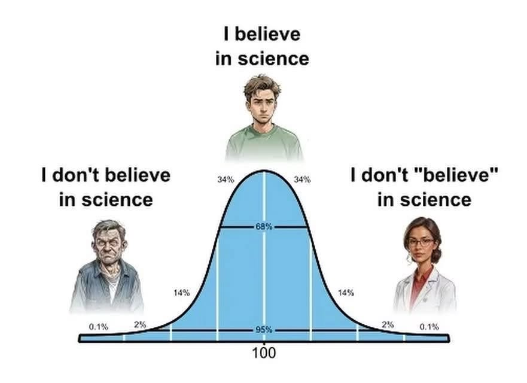

Fact checking the claim that cancer rates are skyrocketing.
Yes we can do a lot better, but there has been progress.
Brief comment with an image fact-checking the claim that cancer rates are skyrocketing, noting there has been progress. The image content is not described.
Fact checking the claim that cancer rates are skyrocketing.
Yes we can do a lot better, but there has been progress.
Louis argues that, while organic is fine if affordable, eating conventionally grown fruit and vegetables is much better than skipping them. He cites Ames's PNAS papers showing 99.99% by weight of dietary pesticides are plants' own natural defense chemicals, and that natural carcinogens in produce far exceed synthetic residues.
Admin guidance that AI fact checks should be posted with the exact prompt, run in a clean session and explicitly request a scientific-accuracy check so the AI is free to disagree. Prior conversation biases the response.

Louis notes that major AI tools like Gemini accurately captured the truth on cholesterol and statins in a fact-check, and encourages members to use them.

Louis urges fact-checking online health claims with AI and says Mark Hyman's viral claim that oatmeal spikes adrenaline 'like being chased by a tiger' is a misunderstanding. He shares a Nutrition Made Simple critique.
Louis shares a Nutrition Made Simple video responding to claims about saturated fat made by a US health official.

Louis argues that nothing in science needs to be 'believed' because it can be fact-checked and verified, and that claims which cannot be verified are ideology that merely sounds like science.